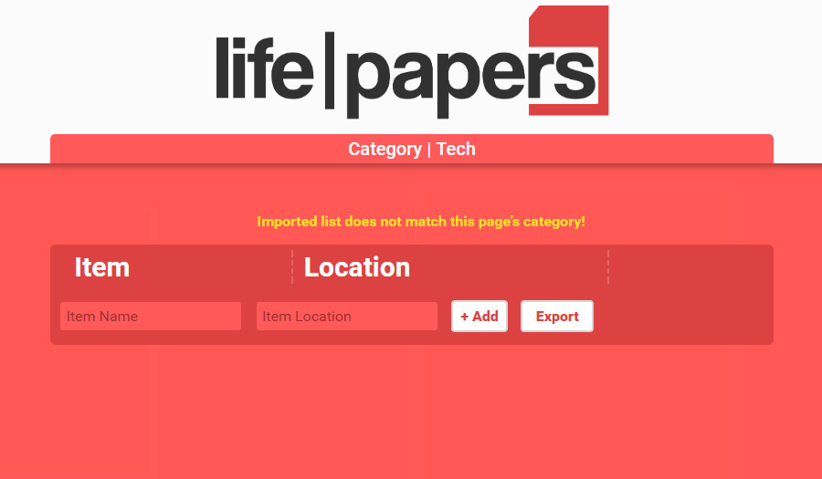

Every time you add to your lists, that information is stored in your web browser's storage. This means that when you open Life Papers with a different web browser, you data will not show. This also means that when or if you clear your web browser's cache/data you will also be deleting any lists you have created. To account for this, it is recomended that you save/export your lists in order to make a backup. Later or if you would like to add your lists to another browser's database, you can import these saved text files to their corresponding categories.
1. When you're ready to save your list, click on the Export button and you will be prompted for a location
to save your backup. It is RECOMENDED that you save these files into the "backup" folder in Life Papers' main
directory.
There may come a time when your browser cache gets cleared or you may want to import a saved list to a different instance of Life Papers. Importing, takes one of your previously saved text files, checks their category, then adds them to your list. Importing a list will not clear your current list, it will simply add the items to your list. This was done on purpose for cases where users don't want to get rid of items already added to a list.
1. Click the Choose File button and select the text file of the corresponding category.
2. Once the file is selected, click the
Import button.
3. If the category imported does not
match you will be notified.

After finding that there were so many things, small and large, that I would have a place for but then forget that
place, I decided to craft a solution. Life Papers is an offline solution, no cloud saves, no syncing. Surely
this has its downfalls, but it also has its pros. No worrying about the information being stolen from a remote
server, or dealing with passwords. Life Papers is just a little something I made to make life simpler, hope it
can do the same for you!
©Copyright 2017 RUFFMARK CREATIVE GROUP